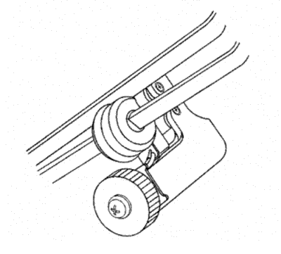
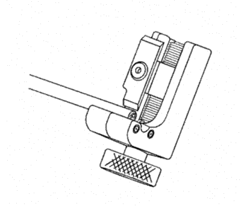
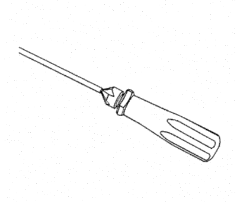
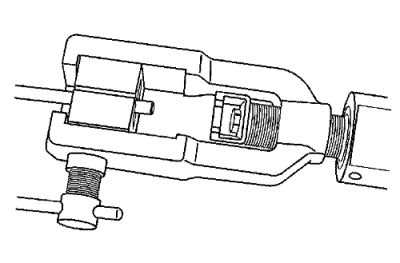
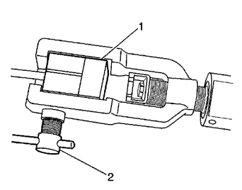
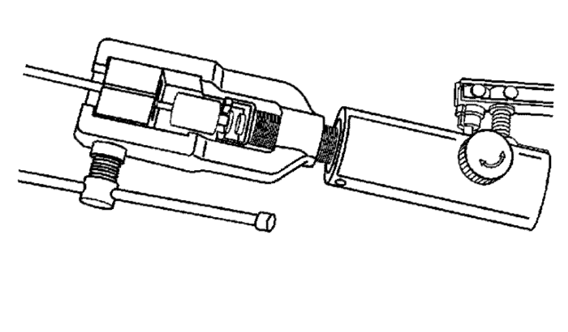
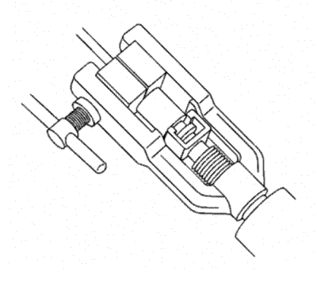
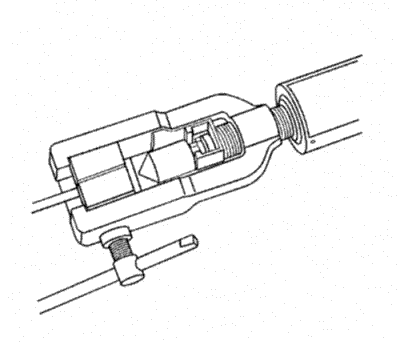
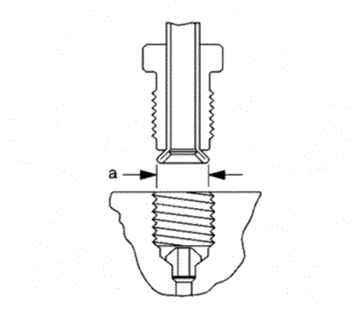

Sustitución del tubo de freno
Herramientas especiales
CH-45405 Juego de herramientas para rebordear tubos
Si desea informarse sobre herramientas regionales equivalentes, consultar Herramientas especiales .
Advertencia: Consulte Advertencia de líquido de frenos irritante en la sección Prólogo.
Advertencia: Utilice siempre manguitos de freno de acero de pared doble al sustituir los manguitos de freno. No se recomienda el uso de ningún otro manguito ya que puede provocar el fallo del sistema de frenos. Coloque y sujete con cuidado los manguitos de freno de repuesto. Utilice siempre las fijaciones correctas y la ubicación original para la sustitución de manguitos de freno. Si no se colocan y sujetan correctamente los manguitos de freno, pueden producirse daños en los manguitos de freno y provocar el fallo del sistema de frenos.
Precaución:Consulte Advertencia sobre los efectos del líquido de frenos sobre la pintura y los componentes eléctricos en la sección Prólogo.
Nota: Al realizar el mantenimiento de las tuberías de freno, observe lo siguiente:| • | Si corta la tubería de freno, utilice tubería del mismo tipo y diámetro exterior para su sustitución. |
| • | Utilice herrajes del tipo y tamaño adecuados. |
| • | Sólo realice rebordes de igual tipo y diseño a los que tenía originalmente el vehículo. |

- Compruebe el área de la tubería de frenos que va a repararse o sustituirse.
- Suelte la tubería de frenos que va a sustituirse de los retenes según sea necesario.
- Seleccione un punto adecuado para cortar la tubería de frenos, si fuera necesario.
| • | Deje una holgura adecuada para maniobrar la herramienta para rebordeado CH-45405. |
| • | Evite cortar la tubería de frenos en dobleces o puntos de montaje. |
- Mediante una cadena o cable, mida la longitud de tubería que va a sustituirse, incluyendo todos los dobleces de la tubería.
- Añada a la medición realizada la longitud adicional adecuada necesaria para crear cada uno de los rebordes.
Especificaciones
| • | 6,35 mm (0,250 pulg.) para 4,76 mm(3/16 pulg.) de diámetro de tubo |
| • | 9,50 mm (0,374 pulg.) para 6,35 mm(1/4 pulg.) de diámetro de tubo |
| • | 12,67 mm (0,499 pulg.) para 7,94 mm(5/16 pulg.) de diámetro de tubo |
Nota: Asegúrese de que el extremo de la tubería de freno que va a rebordearse se corta en un ángulo recto de 90 grados respecto a la longitud del tubo.
- Mediante el cortador de tubos incluido en la herramienta para rebordeado CH-45405, corte con cuidado la tubería de frenos en ángulo recto a la longitud medida.
- Retire del vehículo el tubo de freno seccionado.
- Seleccione el tamaño adecuado de la tubería de freno y las tuercas según sea necesario. El diámetro exterior de la tubería de freno determina el tamaño de la tubería de freno.

- Retire el revestimiento de nylon del extremo de la tubería de frenos que va a rebordearse, si fuera necesario.
| • | Seleccione la punta adecuada en la herramienta de eliminación de recubrimiento incluida en la herramienta para rebordeado CH-45405, desenhebrando el bloque de puntas de la herramienta de pelado e instalando el bloque con la punta deseada dirigida los rodillos de la herramienta. |
Especificaciones
| • | Punta de 6,35 mm (0,250 pulg.) para diámetro de tubo de 4,76 mm(3/16 pulg.)
|
| • | Punta de 9,50 mm(0,374 pulg.) para diámetro de tubo de 6,35 mm (1/4 pulg.) y 7,94 mm (5/16 pulg.)
|
| • | Introduzca el extremo de la tubería de freno que va a rebordearse en la herramienta de pelado hasta la profundidad del borde en los rodillos de la herramienta. |
| • | Mientras sujeta con fuerza la tubería de freno contra los bordes de los rodillos de la herramienta de pelado, gire la rueda manual de la herramienta hasta que la punta entre en contacto con la superficie revestida de la tubería de freno. |
| | Nota: No muerda la superficie de metal de la tubería de freno. |
| • | Gire la herramienta de desforramiento en el sentido horario asegurándose de que el extremo de la tubería de freno permanece apoyado contra los bordes de los rodillos de la herramienta. |
| • | Tras cada uno de los giros sucesivos de la herramienta de desforramiento, gire con cuidado la rueda manual de la herramienta en sentido horario para continuar desforrando el revestimiento de la tubería de freno hasta que quede al descubierto la superficie de metal de la tubería. |
| • | Suelte la rueda manual de la herramienta y extraiga la tubería de freno. |
| | Nota: Asegúrese de que se han eliminado de la tubería de freno todos los restos sueltos del revestimiento de nylon. |
| • | Compruebe el extremo desforrado de la tubería de frenos para asegurarse de que se ha eliminado la cantidad adecuada de revestimiento. |
Especificaciones
| • | 6,35 mm (0,250 pulg.) para 4,76 mm(3/16 pulg.) de diámetro de tubo
|
| • | 9,50 mm(0,374 pulg.) para 6,35 mm (1/4 pulg.) y 7,94 mm (5/16 pulg.) de diámetro de tubo
|

- Bisele el diámetro interior y exterior de la tubería con la herramienta de desbarbado incluida en la herramienta para rebordeado CH-45405.
- Monte las tuercas de tubo en la tubería de frenos en la orientación adecuada.
- Limpie posibles restos de lubricante, suciedad y residuos de la tubería de frenos y de la herramienta para rebordeado CH-45405.

- Afloje el tornillo de sujeción de matrices de la herramienta para rebordeado CH-45405.
- Seleccione el juego de matrices correspondiente y monte las mitades de matriz en la caja con la cara totalmente plana de una matriz dirigida al tornillo de apriete, y con los orificios escariados de ambas matrices dirigidos al pisón de conformación.

- Coloque la cara plana de una matriz no usada (1) contra las mitades de matriz en la caja de apriete y sujétela con firmeza contra la cara con orificios escariados de las matrices.
- Introduzca el extremo preparado de la tubería que va a rebordearse a través de la parte posterior de las matrices hasta que la tubería se apoye contra la superficie plana de la matriz sin usar (1).
- Retire la matriz sin usar (1).
- Asegúrese de que la parte posterior de las dos matrices se asienta firmemente contra el extremo adjunto de la caja de matrices.
- Apriete con la mano firmemente el tornillo de apriete (2) contra las matrices.

- Seleccione el mandril de modelado adecuado y colóquelo en el pisón de conformación.
- Gire la válvula de control del líquido hidráulico en sentido horario hasta la posición cerrada.
- Gire el cuerpo de la herramienta para rebordeado CH-45405 hasta que el fondo alcance la caja de matrices.

- Mientras conduce el mandril de modelado al extremo descubierto de la tubería que va a rebordearse, opere la palanca de la herramienta de rebordeado CH-45405 hasta que el mandril de modelado llegue a las matrices de apriete.
- Gire la válvula de control de líquido hidráulico en sentido anti-horario hasta la posición abierta para permitir que el pisón hidráulico de modelado se retraiga.

- Introduzca el cono de acabado en el pisón de modelado.
- Gire la válvula de control del líquido hidráulico en sentido horario hasta la posición cerrada.
- Gire el cuerpo de la herramienta para rebordeado CH-45405 hasta que el fondo alcance la caja de matrices.
- Mientras conduce el cono de acabado al extremo descubierto de la tubería que va a rebordearse, opere la palanca de la herramienta de rebordeado CH-45405 hasta que el cono de acabado llegue a las matrices.
- Gire la válvula de control de líquido hidráulico en sentido anti-horario hasta la posición abierta para permitir que el pisón hidráulico de modelado se retraiga.
- Suelte el tornillo de apriete de troquel y extraiga las matrices y la tubería.
- Si fuera necesario, golpee ligeramente las matrices hasta que se separen las mitades de matriz.

- Compruebe que el reborde de la tubería de frenos tiene la forma y el diámetro correctos (a).
Especificaciones
| • | 6,74-7,10 mm (0,265-0,279 pulg.) de diámetro de reborde para 4,76 mm (3/16 pulg.) de diámetro de tubería |
| • | 8,57-9,27 mm (0,344-0,358 pulg.) de diámetro de reborde para 6,35 mm (1/4 pulg.) de diámetro de tubería |
| • | 10,42-10,79 mm (0,410-0,425 pulg.) de diámetro de reborde para 7,94 mm (5/16 pulg.) de diámetro de tubería |
- Si fuera necesario, utilizando la sección extraída de la tubería de frenos como plantilla, dé forma a la nueva tubería con una herramienta de doblado adecuada para la tubería de frenos.
Nota: Al montar la tubería, mantenga una holgura de 19 mm (3/4 pulg.) respecto a cualquier pieza móvil o vibratoria.
- Monte la tubería en el vehículo con las uniones de tubería de frenos adecuadas según sea necesario.
- Si se ha soltado anteriormente, asegure la tubería de frenos a los retenes.
- Purgue el sistema de sistema de frenos hidráulicos. Consultar Purga de aire del sistema de frenos hidráulicos .
- Con la ayuda de un auxiliar, compruebe que los rebordes de la tubería de frenos no presentan fugas arrancando el motor y aplicando los frenos.
| © Copyright Chevrolet. Reservados todos los derechos |